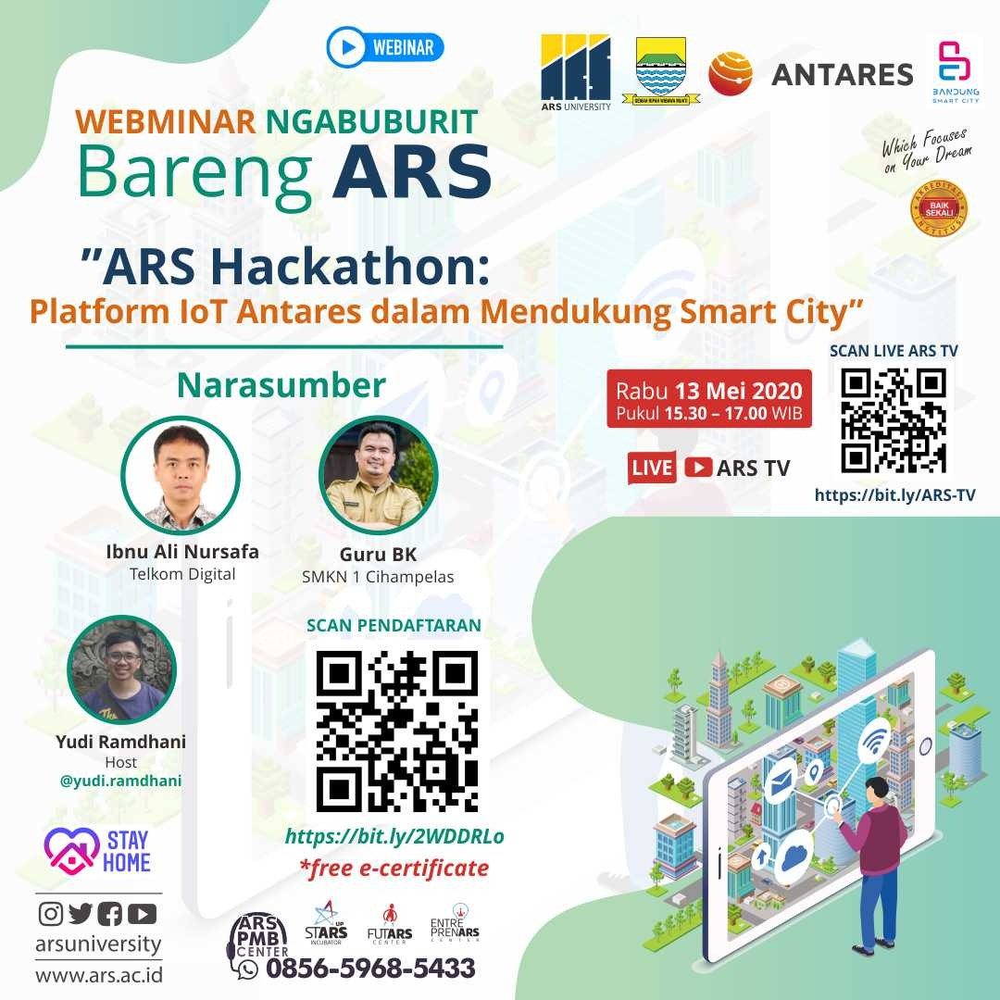

Deskripsi Event:

eminar online yang di selenggarakan IOT Academy merupakan salah satu dari rangkaian acara ARS Hackathon 2020 yang digelar dengan tema "Pemanfaatan Internet of Things Untuk Mendukung Smart City" dengan kategori Peserta Siswa/i SMA/Sederajat (kelompok atau mandiri) dan Umum (kelompok atau mandiri).
IoT Desain dan Aplikasi
Webinar dengan tema “Platform IoT Antares dalam mendukung Smart City” menghadirkan narasumber yaitu Ibnu Ali Nursafa (Telkom Digital) dan juga Dede Remandani (Perwakilan Guru dari SMKN 1 Cihampelas). Dalam kegiatan webinar tersebut menjelaskan terkait ketentuan perlombaan ARS Hackathon 2020 yang memperebutkan total puluhan juta rupiah serta piala walikota Bandung, dan tutorial penggunaan Platform Antares dalam pemanfaatan aplikasi IoT.
Pak dede menjelaskan bahwa dampak SFH kegiatan belajar kurang efektif berbeda dengan siswa datang ke sekolah. Karena di sekolah sudah ada jadwal terkait belajar yang sesuai dengan kurikulum, walaupun saat ini sudah di dukung dengan teknologi yang memungkinkan siswa bisa belajar melalui beberapa pembelajaran online, namun masih kurang maksimal dengan terkendala kouta yang dibutuhkan oleh siswa saat pembelajaran Daring. Harapanya dengan ada acara ARS Hackathon 2020 ini dapat menambah kegiatan para siswa/siswi saat belajar di rumah.
22 November 2021
90 Peserta
32 November 2021
Online